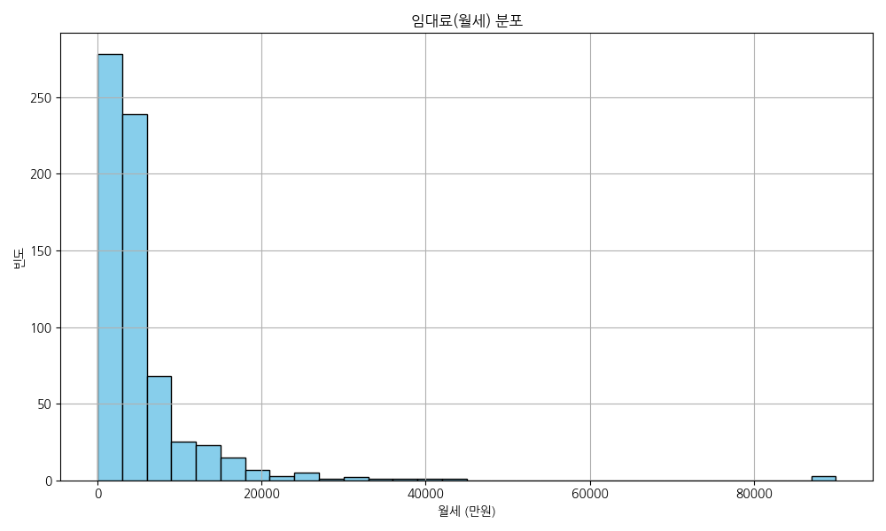
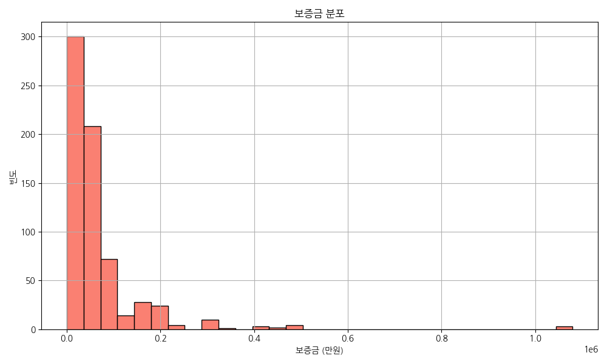
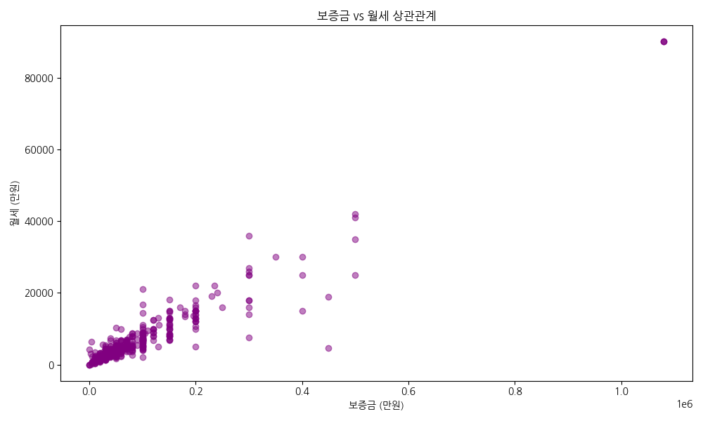
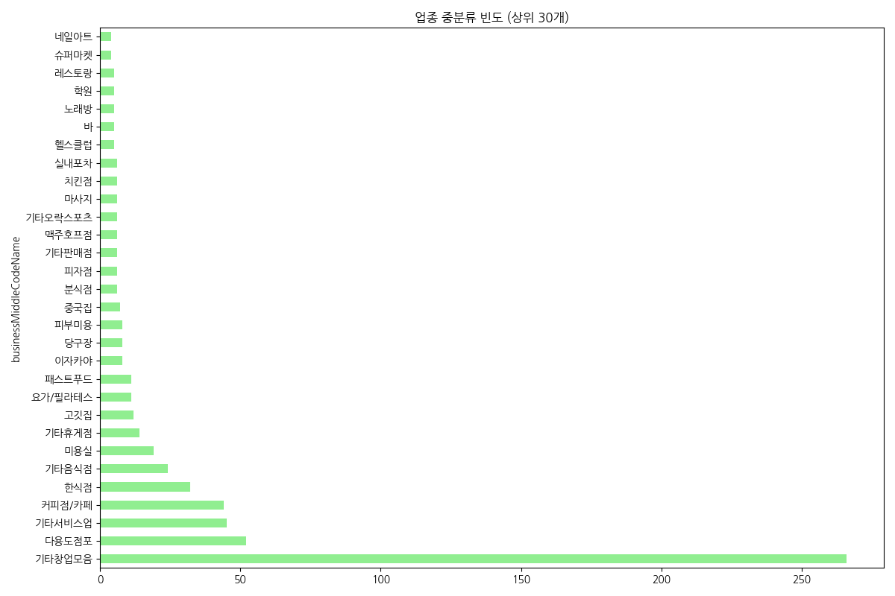
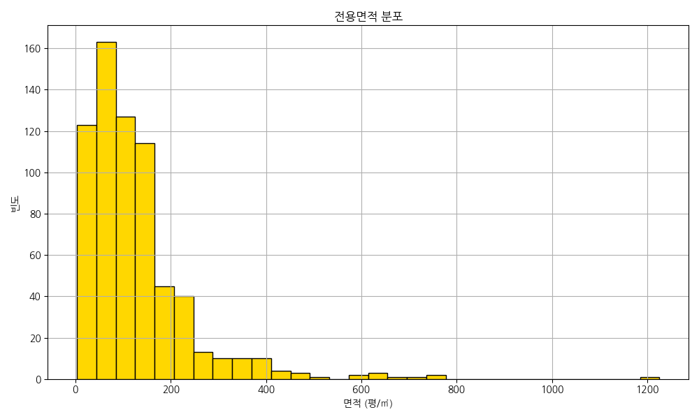
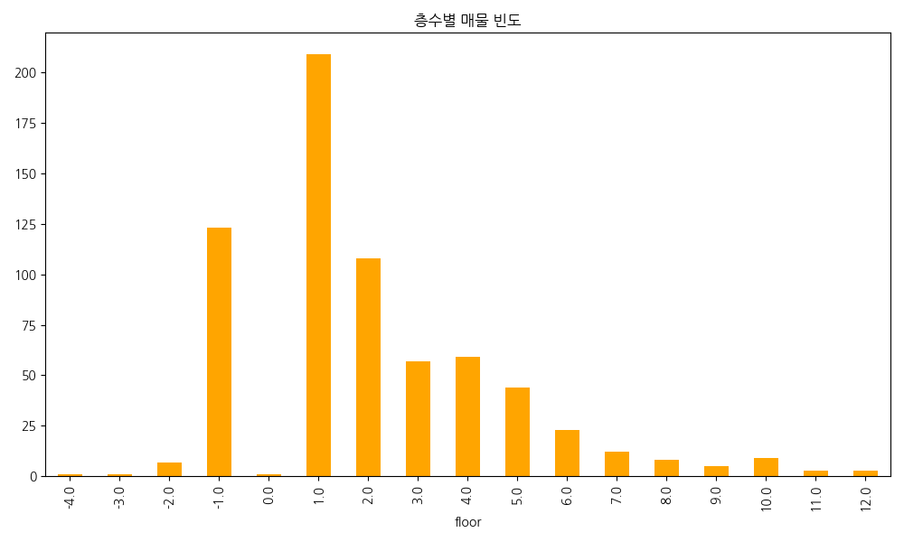
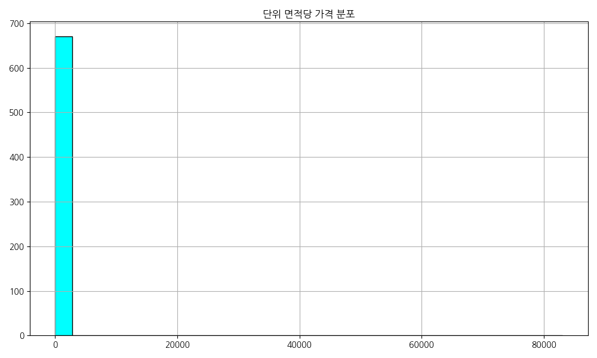
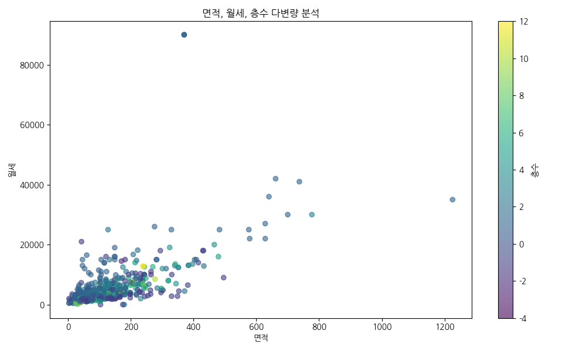

NemoApp 매물 데이터 기반 시장 동향 및 비즈니스 인사이트
본 보고서는 NemoApp에서 수집된 강남역 및 역삼역 인근 상업용 부동산 매물 데이터 673건을 대상으로 수행한 탐색적 데이터 분석(EDA) 결과를 담고 있습니다. 해당 지역은 임대 위주의 상권이 지배적이며, 가격 지표의 변동성이 매우 크고 양극화 현상이 뚜렷하게 관찰되었습니다. 본 대시보드는 단순한 통계 수치를 넘어 데이터 이면에 숨겨진 비즈니스 맥락을 해석하고 전략적 의사결정을 돕기 위해 구축되었습니다.

본 히스토그램과 밀도 추정선(KDE)은 상업용 부동산 매물의 월 임대료 분포를 시각화한 것입니다. 통계적으로 볼 때 평균이 5,346만 원으로 중앙값인 3,400만 원보다 현저히 높은 전형적인 우측 꼬리 분포를 형성하고 있습니다. 이는 강남 및 역삼 권역 상권 내에서 월세 300만 원에서 500만 원 사이의 중저가 소형/중형 매물이 절대다수를 차지하여 시장의 기본 가격대를 형성하고 있음을 보여줍니다.

해당 그래프는 보증금 데이터의 빈도 분포를 히스토그램 형식으로 시각화한 결과물입니다. 보증금 데이터의 평균은 약 6,895만 원, 중앙값은 4,000만 원이며, 표준편차가 9,900만 원에 달할 정도로 값의 산포도가 매우 크게 나타나고 있습니다. 강남 지역 임대차 시장에서 초기 보증금으로 3,000만 원에서 5,000만 원 정도를 요구하는 매물이 시장의 표준적인 기준점으로 작용하고 있음을 의미합니다.

피어슨 상관계수가 0.9479로 도출되었는데, 이는 통계학적으로 완벽에 가까운 강한 양(+)의 선형 상관관계를 의미합니다. 그래프에 나타난 우상향하는 추세선은 보증금이 높아질수록 월 임대료 또한 매우 일관되게 상승한다는 사실을 직관적으로 보여줍니다. 즉, 보증금과 월세는 대체재 관계가 아니라, 입지 가치와 프리미엄을 반영하는 보완재로서 동반 상승하는 구조를 가집니다.

'기타창업모음(266건)'과 '다용도점포(52건)'가 압도적인 상위권을 차지하고 있습니다. 이는 강남/역삼 상권의 매물들이 특정한 하나의 용도로 고정되기보다는, 임차인의 니즈에 따라 유연하게 업종 전환이 가능한 범용적 형태를 띠고 있음을 시사합니다. 임대인들은 매물을 특정 업종 전용으로 세팅하기보다 범용적 상태로 내놓아 공실 리스크를 최소화하려는 경향이 있습니다.

평균 전용면적은 127.57㎡(약 38.5평), 중앙값은 102.15㎡(약 30.9평)로 산출되었습니다. 20평에서 40평 사이의 매물이 전체 시장 물량의 주류를 이루고 있음을 확인할 수 있습니다. 이는 강남권 상권이 1~2인 가구 및 직장인 타겟의 소규모 F&B, 개인 프랜차이즈 가맹점, 소형 오피스 수요에 철저히 맞춰져 작동하고 있다는 점을 시사합니다.

지상 1층 매물이 209건으로 가장 많고, 지하 1층(123건), 2층(108건) 순으로 관찰되었습니다. 1층 매물 비중이 높다는 것은 상권 회전율이 빠르고 즉각적인 유입을 노리는 소매점 수요가 활발함을 의미합니다. 지하 1층 공급이 2층보다 많다는 점은 가시성보다 면적과 가격 경쟁력을 중시하는 목적형 소비 타겟 비즈니스에 적합한 틈새시장을 보여줍니다.

전체 평균은 439.73만 원 수준이지만 왜도가 17.35로 극단적으로 높습니다. 이는 일부 프리미엄 매물이 평균을 왜곡하고 있음을 파악할 수 있습니다. 평당 단가가 평균을 훨씬 넘어서는 상위 10% 매물은 강남대로변 초역세권 A급 빌딩일 확률이 높으며, 하위 구간은 역에서 먼 이면도로 안쪽 매물일 가능성이 큽니다.

저층부(1~2층)는 면적이 작음에도 월세가 높게 형성된 반면, 고층부(3층 이상)는 넓은 면적에도 월세가 낮아지는 역전 현상이 뚜렷합니다. 이는 단순히 면적이 넓다고 비싸지는 것이 아니라, '층수'라는 변수가 가격 결정에 훨씬 강력하게 작용하는 시장 역학을 입증합니다. 비즈니스 모델에 따라 저층과 고층을 전략적으로 선택해야 합니다.
강남권 상업용 부동산 시장은 철저히 '소유'가 아닌 '활용' 중심의 생태계입니다. 전체 데이터의 99.6%가 임대 매물이라는 점은, 이곳이 건물주들의 자본 이득 실현의 장이 아니라 철저한 캐시카우(Cash Cow)로서 기능하고 있음을 증명합니다. 시장 가격은 평균의 함정에 빠져 있습니다. 보증금 4,000만 원, 월세 340만 원, 전용면적 약 30평이 실제 강남 진입을 위한 '최소 자본 진입 장벽'입니다.
워크인 고객이 생명인 소매점은 무조건 1층을 사수해야 하지만, SNS 등으로 찾아오는 목적형 비즈니스(피부과, 필라테스, 파인다이닝 등)는 굳이 1층을 고집할 이유가 없습니다. 동일 예산으로 1.5~2배 넓은 공간을 확보할 수 있는 고층부나 지하 1층을 선택하는 것이 재무적 효율성을 극대화하는 길입니다. 또한 '인테리어 완비', '무권리' 매물을 타겟팅하여 초기 매몰 비용(CAPEX)을 낮추는 것이 필수적입니다.
임대인에게 가장 큰 리스크는 공실입니다. 특정 업종 전용으로 공간을 설계하기보다, 어떤 업종이든 즉시 입점 가능한 '화이트 박스(White-box)' 상태를 유지하여 공간의 유연성을 확보해야 합니다. 상하수도 및 전기 용량을 충분히 확보하여 임차 후보군의 파이를 넓히는 것이 안정적인 수익률 유지의 정석입니다.
NemoApp은 단순 호가 나열을 넘어 '입지 대비 평당 가격 경쟁력 지수'나 '인테리어 잔존 가치 환산 정보' 등 데이터 기반의 정교한 애널리틱스를 제공해야 합니다. 정보의 비대칭성을 해결하고 객관적인 가치 지표를 제시하는 것만이 압도적인 고객 경험(CX)을 창출하고 시장을 선도하는 유일한 열쇠입니다.